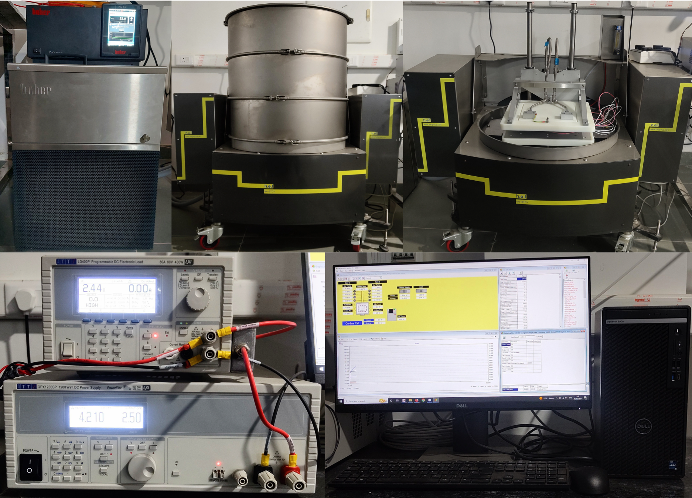
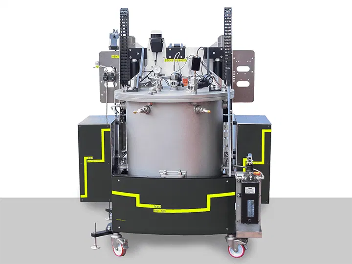
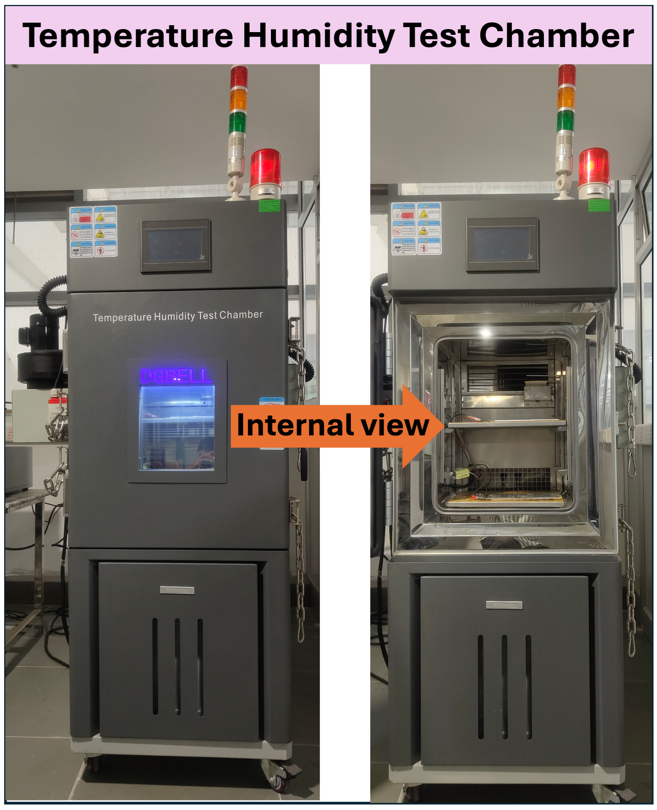

Advanced experimental facilities at the Advanced Thermal Characterization Laboratory, Indian Institute of Technology Kanpur are utilized for battery calorimetry, thermal characterization, safety assessment and controlled-environment testing. These facilities support my doctoral and ongoing research activities in lithium-ion battery thermal management, heat generation, battery safety and intelligent battery systems.

Battery CalorimetryThe HEL ISO BTC+ isothermal battery calorimeter enables direct experimental measurement of the heat released or absorbed by lithium-ion batteries during charge, discharge and dynamic operating conditions.
By maintaining well-controlled thermal conditions, the system provides high-fidelity Heat Generation Rate (HGR) measurements that can be used for battery thermal characterization, electrochemical-thermal model validation and development of data-driven and machine-learning-based predictive models.
Directly measures heat released or absorbed by the battery during operation.
Generates accurate experimental HGR data for battery characterization.
Enables calorimetric experiments under controlled thermal conditions.
Supports validation of physics-based, numerical and machine-learning models.
Isothermal calorimetric measurements form an important experimental foundation of my research on lithium-ion battery heat generation, electrochemical-thermal modelling and machine-learning-based HGR prediction.

Battery SafetyThe Adiabatic Rate Calorimeter (ARC) is used to investigate the thermal stability and safety behaviour of batteries under near-adiabatic operating conditions.
The system enables investigation of battery self-heating, critical temperature behaviour and thermal runaway, providing important experimental information for battery safety assessment and thermal management system design.
Investigates thermal runaway behaviour and associated critical conditions.
Characterizes battery self-heating behaviour under near-adiabatic conditions.
Supports evaluation of battery thermal stability under critical conditions.
Provides experimental insights for improved battery safety and thermal management.
Adiabatic calorimetry supports investigation of battery thermal stability, self-heating and thermal runaway behaviour for the development of safer lithium-ion battery systems.

Environmental TestingThe Temperature & Humidity Chamber provides a precisely controlled environmental platform for evaluating battery behaviour under a wide range of thermal and humidity conditions.
The chamber can maintain temperatures ranging from −50 °C to 150 °C while also providing controlled humidity conditions. This enables systematic investigation of battery performance, thermal behaviour and reliability under different environmental conditions.
Low-temperature testing capability for evaluating battery behaviour under cold operating conditions.
High-temperature environmental testing capability.
Provides controlled humidity conditions for environmental testing.
Enables performance and thermal evaluation across controlled environmental conditions.
The environmental chamber enables controlled temperature and humidity experiments for investigating battery performance, thermal response and reliability across diverse operating environments.
Indian Institute of Technology Kanpur
These facilities support my doctoral and ongoing fellowship research activities in battery thermal characterization, heat generation, safety, electrochemical-thermal modelling and intelligent Battery Management Systems.